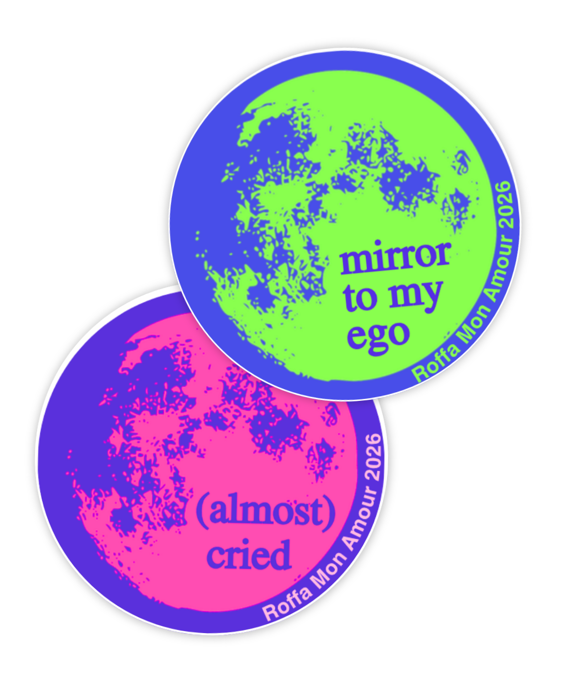

Hi :) I'm Lucy Pok* 


*You probably wouldn't remember my
So you decided to know a bit more about me. Very well.
My full name is Lucy Pokrivčáková and I’m a Slovak citizen of the world. I was not lying before, I move around quite a lot and not just between countries but also spaces, mostly the ones I don’t quite belong in (like lectures outside of my major, abandoned buildings and festivals I can’t afford).
Hard skills:
- Adobe Premiere
- Videography
- Adobe Photoshop, Illustrator
- Claude
- Biking
- Canva Pro
- Research
Soft skills:
- Curiosity
- Critical thinking
- Getting shit done
- Smiling despite being Slavic
- Amazing at solo travelling
Languages:
- Slovak - Native : in Slovak, hi is “Ahoj!”, like a pirate, even though we have zero ocean or sea around us
- English - Fluent
- Spanish - Solo hablo un poquito de español.
Countries I’ve been to:
Albania, Austria, Belgium, Colombia, Croatia, Cyprus, Czech Republic, Egypt, England, Estonia, France, Germany, Greece, Hungary, Ireland, Italy, Japan, Latvia, Lithuania, Monaco, Morocco, Netherlands, Poland, Portugal, Romania, Scotland, Slovakia, Slovenia, Spain, Taiwan, Turkey, Vatican City, Wales
My mum is a flight attendant and my dad a history fanatic. Maybe that's why I'm always flying around and collecting stories. Whether it's between countries or design, culture and advertising, I'm always on the lookout for dots worth connecting, and ideas worth making.
Scroll a bit and see what I've made so far ↓

Hickey
research + design + execution
Research & design. A handmade zine exploring the relationship between intimacy and aging.
STAIN
concept + direction + edit
Animated short. In a world where everything is done for you, and creativity is non-existent, a simple stain can be a sign of agency.

Society 5.0 Festival Aftermovie
film + edit
Official recap film capturing the energy and highlights of the festival.
Depop Campaign
concept + strategy + visuals
Could I find this on Depop? Reframing how we see second-hand.

Roffa Mon Amour Festival
communication & marketing internship
Film Festival internship. Communication & Marketing, Design, PR, Socials, Film texts and much much more...

Easy Ride
strategy + concept + design
20th anniversary campaign for EasyToys. Racing performance as entry point.
Hyperraar
research + strategy + concept
Participatory music experience. Turn the doomscroll into music, together.

What if...
experiments + personal